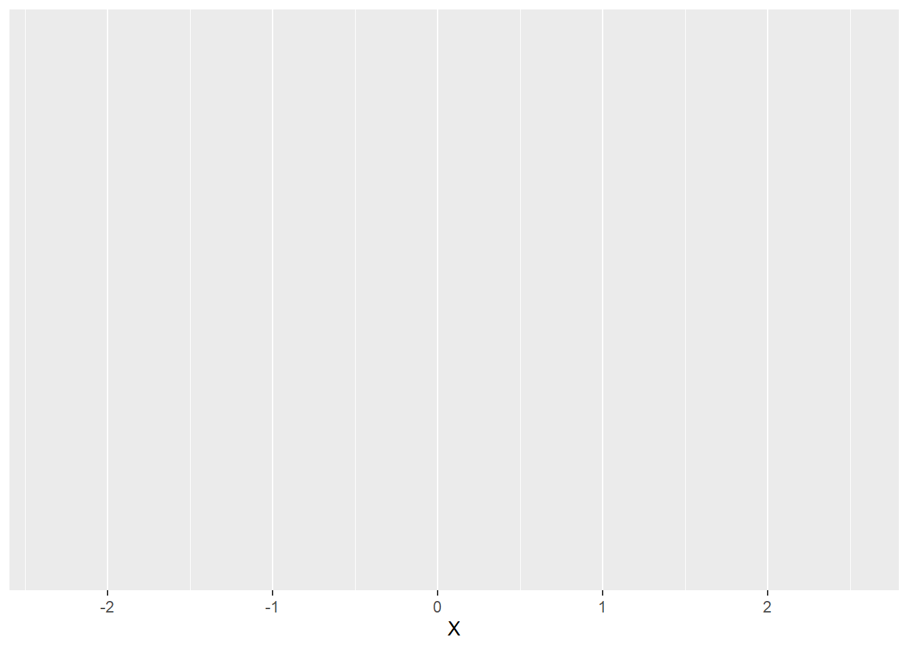

ID W X Y Z
1 1 1 -1.21 -0.30 0
2 2 2 0.28 0.31 0
3 3 3 1.08 1.65 0
4 4 4 -2.35 -2.35 0
5 5 5 0.43 0.10 0
6 6 1 0.51 1.18 0Histograms
The first type of plot we are going to look at are histograms. Histograms are a common way to visualise the distribution of numerical variables. The variable values are grouped into categories called bins on the x-axis, and the frequency of the data in each bin is represented on the y-axis. Specifically, we plot bars for each bin with the height of the bars corresponding to the frequency of the data in the respective bins.
That said, we cannot plot without data, so let’s make up some data that we can use for simple plots. The data contains five variables, \(ID\), \(X\), \(Y\), \(Z\), and \(W\). \(ID\) is simply a subject identifier. Both \(X\) and \(Y\) are continuous variables, whereas \(Z\) is a two-level factor. Finally, \(W\) is a numeric variable with four levels. Here is an excerpt of the data, which is stored in a data frame called df1.
Let’s say we want to plot a histogram of variable \(X\) in our data set. We need to know that for histograms, we only need to define what goes on the x-axis in our aesthetics. The reason is that the y-axis is always the frequency of the data, so we do not need to specify that. It is prudent to define the base plot as an R object, so this is what we will do. Here is what the syntax would look like:
# load library ggplot2, which we need to create the plots
library(ggplot2)
# create an empty base plot for a histogram of variable X in df1
p1 = ggplot(data = df1, mapping = aes(x = X))Once we run this line of code, our environment will show a new list-type object called “p1”. We can display the base plot by running its name as code. If we do so, R will display the empty base plot in the Plots tab of the Utility and Help section of RStudio’s interface (bottom right). Here is what this plot would look like:

As we can see, the variable \(X\) appears on the x-axis of the plot. The ggplot function automatically chooses the range of x-values based on the data. Since we did not specify the \(y\)-argument of the aes function, there is nothing on the y-axis yet. Note that, per default, ggplot creates a light grey background with white grid lines for its plots. We will learn how to change that later on.
Now that we have a base plot, it is time to add a new layer with the desired geom. We can do so using the function geom_histogram. This function has several optional arguments, including the mapping argument we already know from the ggplot itself. What this means is that we can overwrite the mapping of our base plot for specific geoms we add to it. For now, we will not do that. In this case, the function “inherits” the mapping from the base plot.
We will, however, use either of two optional function arguments that define how our histogram looks like, namely:
- bins (optional): the number of equally sized bins, in which the data is being sorted; defaults to 30.
- binwidth (optional): a numeric value or function that determines how wide the bins are; this argument is NULL by default (meaning that it is not specified at all); if we define it, it overrides the bins argument.
One important aspect to the ggplot syntax is that we add layers to a plot using the + operator. We can either save the new plot with the added layer as a new object, overwrite the old object with the new plot, have the new plot shown in the plot tab by not defining it as an object. Let’s say we want to group our data into 10 bins in the histogram. Let’s have a look at how the syntax would look like:
## create a histogram of X with 10 bins
# update the plot object by overwriting it
p1 = p1 +
geom_histogram(bins = 10)
# create the updated plot as a new object
p2 = p1 +
geom_histogram(bins = 10)
# have the new plot shown in the plot tab
p1 +
geom_histogram(bins = 10)If we chose the third option above or otherwise called the name of the newly defined object, the new plot will be shown in the plot tab. Here is how it would look:

As we can see, the plot now has a proper y-axis. The reason is that we chose a geom that determines what goes on this axis (frequency of the data in each bin). We can also verify that the data has been grouped into 10 bins. Finally, now that we have a proper y-axis, there are also horizontal grid lines.
So far, so good. However, we may want to change two aspects of the histogram: the colour of the bars (because the dark grey is depressing) and their border (because it looks tidier if there is a border separating the bars). We can do so by specifying two arguments of the geom_histogram function:
- colour (optional): a character string representing either a colour word R knows or an RGB code; if we did not specify a variable coding the colour of the borders of our bars in the aesthetics of our plot (either the aesthetics inherited from the base plot or ones we defined separately in the function call of geom_histogram), we can assign a border colour for all bars here.
- fill (optional): a character string representing either a colour word R knows or an RGB code; similar to the colour argument, but it determines the colour used to fill all bars.
Let’s say we prefer our bars to appear in light blue with a dark blue border. We can ask R to do that by specifying the colour and fill arguments as shown below:
# change the filling and border colours of all bars to
# light blue and dark blue, respectively
p1 = p1 +
geom_histogram(bins = 10, colour = 'darkblue', fill = 'lightblue')Here is what the plot looks with the new colours assigned:

Interchangeability of stats and geoms
As mentioned in the introductory section on data visualisation using ggplot2, each geom_ type function comes with a stats argument and vice versa. In case of the geom_histogram function, the default for that stat argument is “bin”, which divides the data specified as x in the aes function call of the base plot into several equally spaced bins.
Knowing this, we can create a histogram using the stat_bin function instead (see code example below):
# create an empty base plot for a histogram of variable X in df1
p1 = ggplot(data = df1, mapping = aes(x = X))
# add a layer with a histogram using the stat_bin function
p1 +
stat_bin(bins = 10, colour = 'darkblue', fill = 'lightblue')As we can see below, the resulting graph is identical to the one we created abnove using ’geom_histogram`.